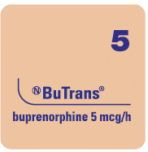
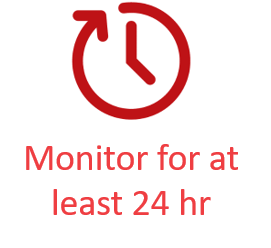

- BuTrans should ONLY be prescribed to
patients who require continuous opioids
for pain management.
- BuTrans can be used in opioid naïve
patients, during which initiation doses higher than the 5 mg patch should not be
used.
BuTrans should only be prescribed by persons knowledgeable:
- In the continuous administration of
potent opioids,
- In the management of patients
receiving potent opioids for treatment of pain,
- And in the detection and management
of respiratory depression including the use of opioid antagonists.

- Serum buprenorphine concentrations
decline gradually after patch removal (~50% in 12 hours)
- Patients who have experienced
serious adverse events should be monitored for at least 24 hours after BuTrans
removal or until the adverse reaction has subsided
Due to the formation of a subcutaneous
depot
of buprenorphine, not only does continued exposure
occur after patch removal but, in the case of removal prior to attainment of peak buprenorphine
exposure, buprenorphine plasma levels may continue to increase after removal of BuTrans patches.
Monitor for signs of respiratory depression until a stable maintenance dose is reached.
Transdermal use on intact skin only:
- Use on compromised skin can lead to
increased exposure to buprenorphine
Patients should be cautioned not to consume alcohol while using BuTrans as it may increase
the chance of experiencing dangerous side effects.
Risk of Unintentional Increase of Drug Exposure
Patients with Fever:
- Increased blood flow to the
skin may enhance absorption.
- Patients with severe
febrile
illness should be monitored for side effects and may
require dose adjustment.
Application of External Heat:
- Avoid exposing the BuTrans
site to external heat sources as an increase in absorption of buprenorphine may
occur and result in serious medical consequences.
Acute Abdominal Conditions
As with other μ-opioid receptor
agonists, the administration of BuTrans may obscure the
diagnosis or clinical course in patients with acute abdominal conditions.
Addiction, Abuse and Misuse
Like all opioids, BuTrans has a potential risk of addiction, abuse and misuse, which can lead
to overdose and death. Therefore, BuTrans should be prescribed and handled with caution.
Refer to PM for complete safety information.
Measures that help to limit abuse of opioid drugs:
- Proper assessment of the patient
- Proper prescribing practices
- Periodic re-evaluation of therapy
- Proper dispensing and appropriate storage (i.e., under lock)
Cardiovascular
Hypotensive
Effects:
- BuTrans should be administered
with caution to patients at risk for hypotension.
- Buprenorphine, like other
opioids, may cause severe hypotension in patients with
depleted blood volume or after agents acting on
vasomotor tone
such as
phenothiazines
or general anesthetics.
- Patients receiving BuTrans
as their first around-the-clock opioid may be at increased risk of hypotension or
orthostatic syncope,
similar to that seen with other opioids.
Concomitant Use of CYP3A4 Inhibitors
The concomitant use of BuTrans with
cytochrome P450 3A4
inhibitors may result in an increase in buprenorphine plasma concentrations, which could
increase dose related toxicity, including potential fatal respiratory depression.
Concomitant Use of CYP3A4 Inducers
- The interaction between
buprenorphine and CYP3A4 enzyme inducers has not been studied.
- Coadministration of BuTrans
and enzyme inducers could lead to increased clearance which might result in reduced efficacy.
Dependence/Tolerance
Like all opioids, BuTrans has a potential risk of addiction, abuse and misuse, which can lead to
overdose and death. Therefore, BuTrans should be prescribed and handled with caution.
Refer to PM for complete safety information.
As with other opioids, tolerance and physical dependence may develop upon repeated administration
of BuTrans and there is a potential for development of psychological dependence.
- Taper gradually from the drug
if it is no longer required for pain control.
- Withdrawal may occur following
abrupt discontinuation or upon administration of an opioid antagonist.
- Any discontinuation of an
opioid may cause withdrawal. If BuTrans is no longer required
for pain control, patients may be discontinued gradually. Carefully monitor for serious
withdrawal symptoms. Refer to established professional practice resources and the
BuTrans PM.
- BuTrans should NOT be
prescribed to patients with known physical dependence on other opioids.
For more detail, see BuTrans PM